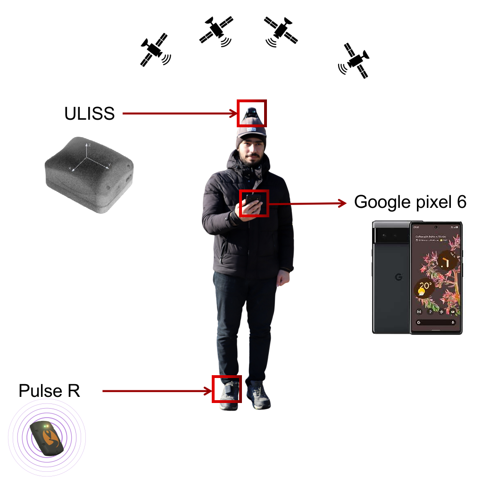
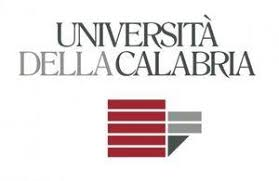
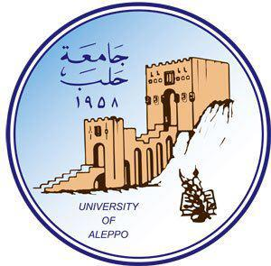

About Me
PhD researcher, embedded systems engineer, and lifelong learner
Professional Background
- Current Role — PhD researcher at Universite Gustave Eiffel, focusing on advanced signal processing for positioning systems and anomaly detection for positioning signals
- Embedded Linux Engineer — Developed custom Linux distributions using Yocto Project, created BSPs for STM32MP1 and i.MX93 platforms, implemented device drivers and system integration
- Embedded Systems — STM32 microcontroller programming, real-time operating systems (Zephyr, FreeRTOS), low-level hardware interfacing and optimization
- AI & Deep Learning — Anomaly detection using deep learning, signal processing with neural networks, machine learning for pattern recognition in positioning data

PhD in Signal Processing
University of Gustave Eiffel, France
Nov 2023 – Nov 2026
Thesis: Anomaly Detection for Positioning Signals
Supervisor: Prof. Valerie Renaudin

Master's in Telecommunication Engineering
University of Calabria, Italy
Sep 2021 – Oct 2023
GPA: 110/110 cum laude
Thesis: Design and Realization of a Wireless Crack Detection System Based on IoT and Acoustic Emission
Supervisor: Prof. Francesco Lamonaca

Bachelor's in Electronics Engineering
University of Aleppo, Syria
Sep 2014 – Sep 2019
GPA: 88.56% with distinction
Thesis: Implementation of a Free Space Optical System Using LASER and Secure Data Transferring by AES Algorithm
Supervisor: Dr. Yahia Fared
